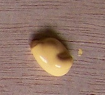
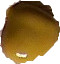

Georgian Cities
Hommages
* Anne Bandry-Scubbi et Brigitte Friant-Kessler : PEINDRE EN CORPUS
* Jacques Carré : Arthur Young, la terre et le paysage
*Annnick Cossic : Batheaston Villa et l'élaboration d'un nouveau modèle de sociabilité britannique : Les jeux poétiques de Batheaston
* Guyonne Leduc : L'évolution de l'utilisation de la Bible dans les œuvres de Henry Fielding: De l'Ancien au Nouveau Testament ?
* Marie-Hélène Thévenot-Totems : Labeur et servitude des femmes dans les Hautes Terre d'Ecosse au XVIIIe siècle
******
 Retour au menu principal
Retour au menu principal

Chapitre suivant : CSTI